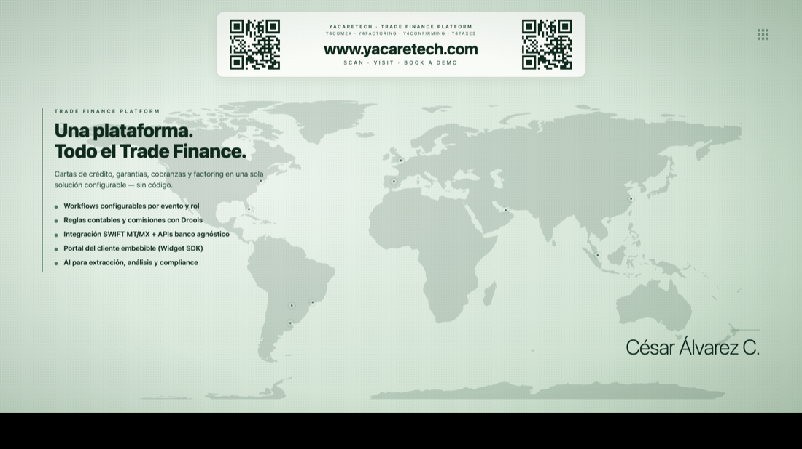

La videollamada nativa del banco. Tu ejecutivo te mira a los ojos, desde donde estés, con cada sesión verificada y el anti-fraude integrado. Nunca te pediremos tu clave.
Solicitar una demo
✔ Ejecutivo · verificadoConfianza
El fraude rompió la confianza en el canal remoto. Y4Meet la devuelve con identidad verificada y protección anti-fraude desde el diseño.
Un código de verificación compartido en cada llamada: el cliente confirma que habla con su banco real, no con un impostor.
Banner anti-phishing permanente. El banco nunca pide clave, OTP ni PIN dentro de la llamada.
Transporte seguro extremo a extremo. La conversación es privada entre el banco y el cliente.
Con la marca del banco, no una app de terceros. Un canal reconocible que el cliente confía.
Diseñado para funcionar tras firewalls y SWG corporativos, con relay TURN cuando la red lo exige.
Graba la sesión para respaldo, cumplimiento y auditoría cuando el proceso lo requiere.
Productividad
Mucho más que una videollamada: todo lo que un ejecutivo necesita para resolver en vivo.
Comparte documentos, formularios y el propio sistema del banco para llenar y firmar juntos.
Mensajes, enlaces y archivos durante la llamada, sincronizados para todos los participantes.
Tableros de agenda y compromisos con avance en vivo. La reunión deja acuerdos, no solo palabras.
Dinámicas guiadas y biblioteca de videos para capacitación y asesoría dentro de la sala.
Fondos profesionales con la identidad del banco para cada ejecutivo.
Un asistente que guía cada paso del flujo, sugiere y resume — configurable por plantilla.
Sin barreras
Atiende en el idioma del cliente sin intérpretes externos. Interpretación 100% local, privada y sin costo por minuto.
Transcripción y subtítulos en tiempo real durante toda la llamada.
Cada quien escucha en su idioma: interpretación de voz personalizada por participante.
El procesamiento ocurre en el dispositivo: nada de la conversación sale a un tercero.
Escala y flexibilidad
Conexión directa P2P con relay TURN de respaldo: máxima calidad y estabilidad.
Reuniones de 20+ participantes con servidor SFU LiveKit, sin sacrificar rendimiento.
Invita por link con admisión del organizador y enlaces con vigencia controlada.
Salas permanentes con un link fijo, sin login ni caducidad, para atención continua.
El organizador puede ceder el control y coordinar múltiples salas desde un solo enlace.
Onboarding, asesoría o capacitación: flujos guiados que se arman por configuración, no por código.
Plantillas poderosas
Y4Meet no es una sala genérica. Cada plantilla arma el ambiente, los pasos, las herramientas y el copiloto adecuados — por configuración, no por código.
Monitoreo y decisiones en crisis: tableros en vivo, roles claros, foco total y evidencia de lo acordado.
Láminas de apoyo, guion guiado, tips y casos. El facilitador marca por dónde va la clase para todos, en vivo.
Daily, seguimiento y retrospectiva con agenda y compromisos que quedan registrados y con avance visible.
Demo, negociación y cierre: presenta, comparte pantalla y haz avanzar el pipeline dentro de la misma llamada.
Alta de cliente guiada paso a paso, con verificación de identidad y firma cara a cara.
Soporte y gestión de reclamos con trazabilidad, grabación y evidencia de cada acuerdo.
Casos de uso en banca
Apertura de cuenta y verificación de identidad remota.
Inversiones y banca privada cara a cara.
Cierra factoring o comercio exterior en vivo.
Firma de documentos y soporte con evidencia.
Te mostramos Y4Meet en acción: la sesión verificada, el anti-fraude, la interpretación en vivo y el onboarding remoto.
Hablemos